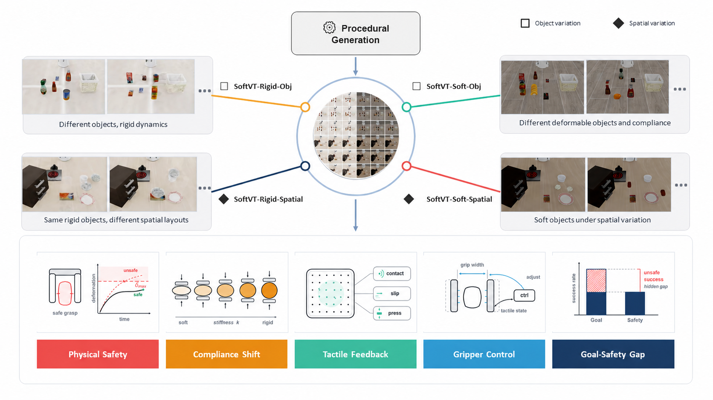
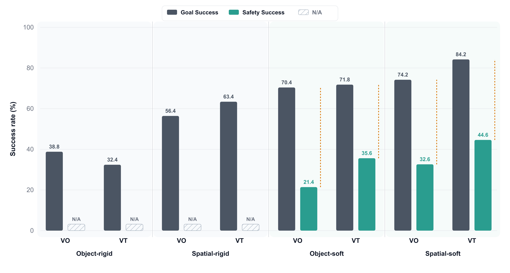

Abstract
Deformable object manipulation poses challenges beyond task completion: successful execution must also maintain safe physical interaction, holding the object stably without slip or drop while avoiding excessive deformation. However, existing manipulation benchmarks are predominantly success-oriented and rarely evaluate whether a policy remains physically safe throughout execution. We present SoftVTBench, a safety-aware visuo-tactile benchmark for physically constrained deformable object manipulation. Built in Isaac Sim with finite-element-simulated deformable objects, SoftVTBench provides multi-view RGB observations, RGB tactile sensing with marker motion, proprioception, and language instructions, and defines four matched task suites over object type (deformable vs. rigid) and variation axis (object vs. spatial). It reports Goal Success and Safety Success separately, where Safety Success additionally requires no drop and peak object deformation below a calibrated, object-specific threshold, computed from privileged FEM simulation states that are hidden from the policy. We implement π0.5-based baselines under this protocol. Experiments show that success-only evaluation substantially overstates policy performance — a large fraction of goal-completing rollouts violate physical safety — and that adding tactile sensing improves Safety Success (e.g., from 21.4% to 35.6% on object-centric deformable tasks) and reduces object deformation during execution, while Goal Success remains comparable. SoftVTBench provides a reproducible benchmark for studying visuo-tactile deformable manipulation under physical interaction constraints.
Benchmark Design
A safety-aware visuo-tactile benchmark for physically constrained deformable object grasping.
SoftVTBench performs contact-rich visuo-tactile evaluation of robot policies under two coupled requirements: completing the manipulation goal and maintaining safe physical interaction throughout execution. A rollout is considered physically safe only if the object remains stably grasped without slip or drop, and its peak deformation stays below a calibrated, object-specific threshold. By reporting Goal Success and Safety Success separately, SoftVTBench exposes goal-complete but physically unsafe rollouts that are hidden by success-only evaluation.
SoftVTBench instantiates this evaluation protocol in Isaac Sim with simulated deformable objects based on finite element method (FEM) soft-body dynamics and a Franka Panda arm with a parallel-jaw gripper carrying GelSight Mini tactile sensors on both fingers. The benchmark provides synchronized third-person and wrist RGB observations, tactile RGB images, marker-motion fields, proprioception, and a standardized end-effector and gripper action interface, all synchronized at 20 Hz. At each control step, the policy receives only its designated observations and outputs an end-effector command and a gripper command; the simulator advances the robot, object, and contact states, producing the next observation for continued contact-rich visuo-tactile interaction.
A rollout only counts as a Safety Success if it reaches the goal and the interaction was safe the whole time: the object was never dropped, and its peak deformation stayed within a calibrated, object-specific safety threshold — measured from hidden simulator ground truth that the policy never sees.

Task Suites
A matched 2×2 design over object type (rigid vs. deformable) and variation axis (object vs. spatial).
Rigid-Body Control Suites
LIBERO-style rigid-object suites that establish baseline manipulation and spatial-variation competence before deformable-object safety is introduced.
Object-Rigid
Rigid LIBERO-style object tasks re-executed through the SoftVTBench tactile-equipped sensing and recording stack. Tests basic pick-and-place competence under object identity variation.
ReferenceSpatial-Rigid
Rigid LIBERO-style spatial tasks under the same sensing stack. Tests robustness to spatial variation — localization, approach, and transfer across changing layouts.
ReferenceDeformable Main Suites
Deformable-object grasp-and-place suites where the object must reach its target region without dropping or over-deforming.
Object-Soft
The robot grasps a deformable object and places it into a fixed target container while avoiding drop and excessive deformation. Object identity, geometry, and material compliance vary across tasks.
ManipulationSpatial-Soft
The same grasp-and-place objective under spatial variation: two visually identical instances appear per scene, and the language instruction specifies which one to manipulate under changing layouts.
ManipulationExperimental Results
π0.5-Vision (VO) vs. π0.5-Visuo-Tactile (VT), evaluated under identical physical and task conditions.
Main Results
| Suite | Method | Goal Success | Safety Success |
|---|---|---|---|
| Object-Rigid | VO | 38.8% | N/A |
| Object-Rigid | VT | 32.4% | N/A |
| Spatial-Rigid | VO | 56.4% | N/A |
| Spatial-Rigid | VT | 63.4% | N/A |
| Object-Soft | VO | 70.4% | 21.4% |
| Object-Soft | VT | 71.8% | 35.6% |
| Spatial-Soft | VO | 74.2% | 32.6% |
| Spatial-Soft | VT | 84.2% | 44.6% |
VO: vision-only π0.5 policy (binary gripper command). VT: visuo-tactile π0.5 policy, additionally observing tactile RGB and marker-motion history with a continuous gripper command. Safety Success is not defined (N/A) for rigid suites, which carry no deformation constraint.

Deformation Distribution
| Suite | Method | Mean | P5 | Median | P95 |
|---|---|---|---|---|---|
| Object-Soft | VO | 16.10% | 4.30% | 10.65% | 44.70% |
| Object-Soft | VT | 15.12% | 3.90% | 8.67% | 38.81% |
| Spatial-Soft | VO | 13.16% | 5.16% | 10.75% | 28.96% |
| Spatial-Soft | VT | 11.58% | 4.75% | 9.67% | 26.56% |
FEM-RMS deformation over all deformable-object rollouts, reported as a percentage of the object bounding-box diagonal. Lower values indicate safer physical interaction.
Tactile information does not consistently improve performance on rigid-object tasks: VT trails VO on Object-Rigid (32.4% vs. 38.8%) but leads on Spatial-Rigid (63.4% vs. 56.4%). When deformation-related safety constraints are absent, visual observations and proprioception already provide the primary information needed for task completion, and tactile sensing yields no consistent gain.
In contrast, VT shows clear advantages on deformable-object tasks. Goal Success is comparable between VO and VT (Object-Soft: 70.4% vs. 71.8%), but VT obtains substantially higher Safety Success (Object-Soft: 21.4% → 35.6%; Spatial-Soft: 32.6% → 44.6%). Tactile sensing is not primarily helping the object reach the target — it is improving contact regulation during execution, reducing slippage, over-compression, and unstable grasping.
The deformation statistics confirm this: VT lowers mean, median, and P95 deformation on both deformable suites, showing that tactile feedback shifts the entire interaction distribution toward safer contact, not just the fraction that clears the safety threshold. Together, these results show that success-only evaluation substantially overstates policy performance on deformable manipulation, and that tactile sensing is most valuable precisely where physical safety is at stake.
Dataset
Suite-indexed demonstrations with multi-view vision, RGB tactile sensing, marker motion, proprioception, and evaluator-only deformation signals.
Data Format
Each episode contains synchronized third-person and wrist RGB, left/right tactile RGB and marker-motion fields, robot proprioception, end-effector and gripper action trajectories, suite and task identifiers, and evaluator-only privileged signals (FEM nodal deformation, contact status, drop events). All streams are recorded at 20 Hz, with deformable-object safety thresholds calibrated per asset from an offline interaction calibration protocol and held out for evaluation only.
Citation
If you find SoftVTBench useful, please consider citing our paper.
@article{jing2026softvtbench,
title = {SoftVTBench: A Safety-Aware Visuo-Tactile Benchmark for
Physically Constrained Robotic Manipulation of Deformable Objects},
author = {Jing, Bowen and Wang, Mingxin and Hao, Ruiyang and Ge, Chenchen and
Shen, Hanwen and He, Junjie and Cui, Yang and Hou, Yiming and
Zhou, Weitao and Wang, Jiawei and Li, Minglei and Zhang, Dandan and
Zhao, Ding and Liu, Houde and Li, Xiaofan and Liu, Si and
Luo, Ping and Yu, Haibao},
year = {2026},
note = {Preprint}
}